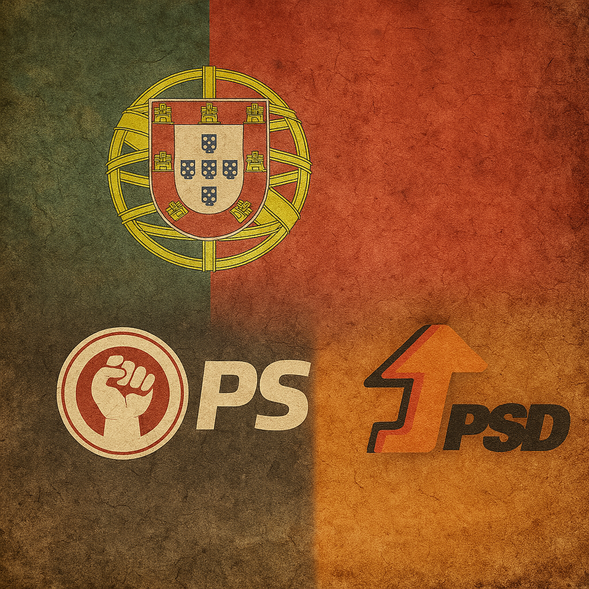

2025-03-31 10:27:28

Em pleno século XXI, quando o mundo clama por consciência e transformação, Portugal permanece adormecido sob o peso da resignação. O povo — sofrido, sim, mas também domesticado — aprendeu a vestir as cores dos partidos como se fossem camisolas de clubes de futebol. Não importa se o jogo é sujo, se o árbitro está comprado, ou se o estádio está a ruir: o importante é gritar pelo “nosso” lado, mesmo que nos leve ao abismo.
O PS e o PSD — irmãos siameses na manutenção do status quo — revezam-se num jogo de espelhos. Prometem mundos, cumprem migalhas. E o povo, de quatro em quatro anos, lá vai às urnas como quem vai ao dérbi da capital: com emoção, mas sem razão. Esquecendo que votar não é torcer. É decidir. E decidir exige memória, exige crítica, exige coragem.
Mas o português foi ensinado a não incomodar. A confiar no “doutor”, no “engenheiro”, no “senhor ministro”. A democracia, ao invés de se tornar poder do povo, virou espetáculo onde o povo é plateia — paga bilhete, mas não sobe ao palco.
Pior ainda: muitos, perante o desencanto, preferem o fatalismo. Dizem “são todos iguais”, “não vale a pena”, e recuam para a apatia — o último reduto da alma vencida. Não percebem que essa rendição é o combustível da perpetuação. Que o conformismo é o cimento com que se levantam os muros da mediocridade.
E no entanto, há uma inquietação surda, uma centelha que ainda pulsa nos que não desistiram de pensar. Aqueles que recusam a polarização estéril e o fanatismo partidário. Aqueles que compreendem que o país não precisa de gestores de aparência, mas de visionários comprometidos com a verdade, com a justiça e com a liberdade criadora.
Portugal precisa de acordar. E para isso, primeiro, tem de desaprender o clubismo político. Tem de entender que nenhum partido é pátria. Que a lealdade cega é o princípio do declínio. E que só os povos que ousam recomeçar, fora das estruturas viciadas, podem construir uma nova aurora.
Documento criado, Francisco. Já temos o texto “Portugal, Terra de Conformismo e Clubismo Político” pronto para continuar ou afinar.
Créditos colaborativos para ChatGPT e DeepSeek (c)